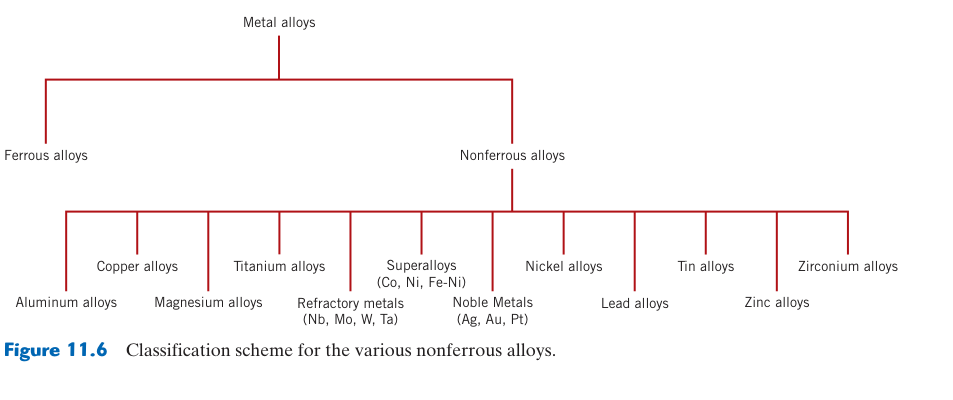
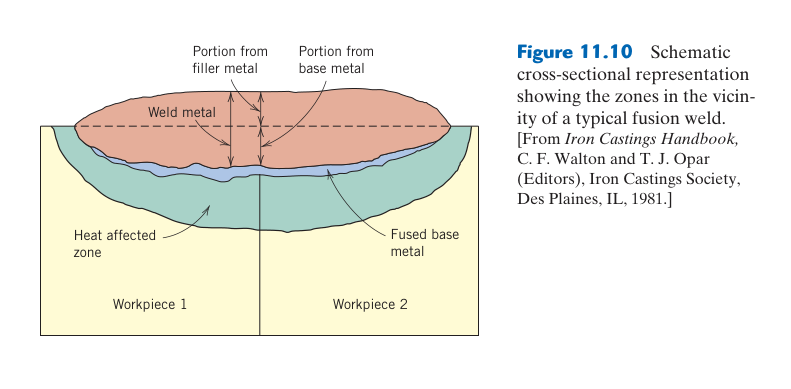
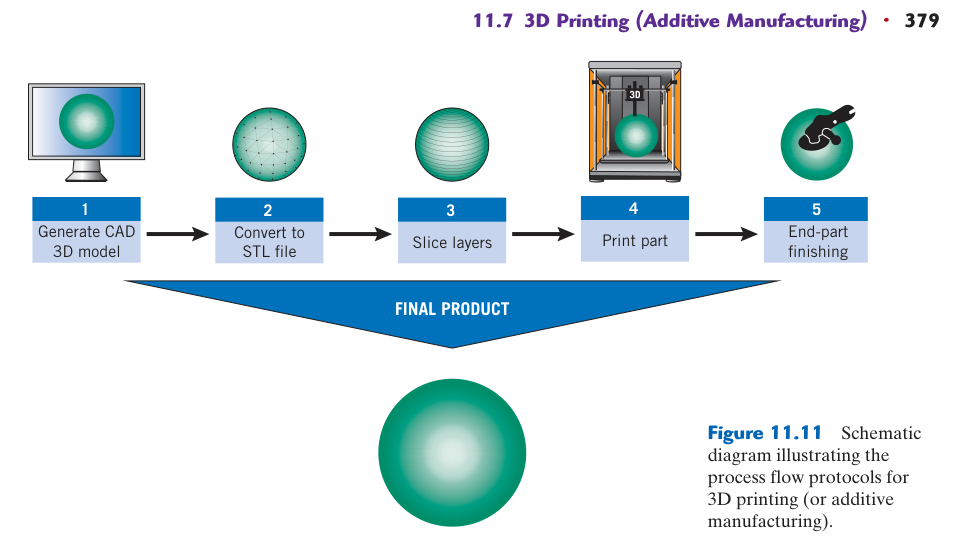
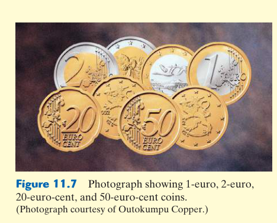
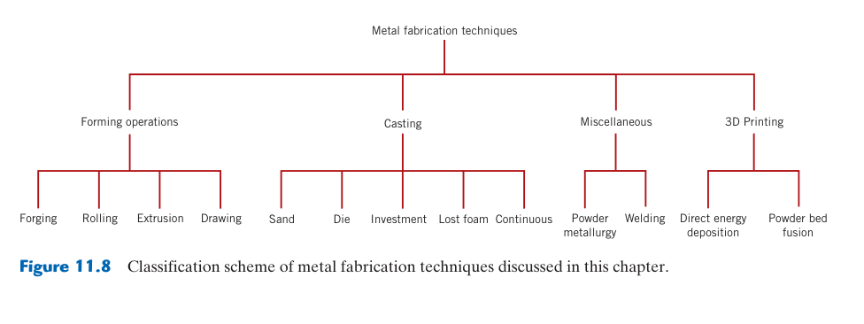
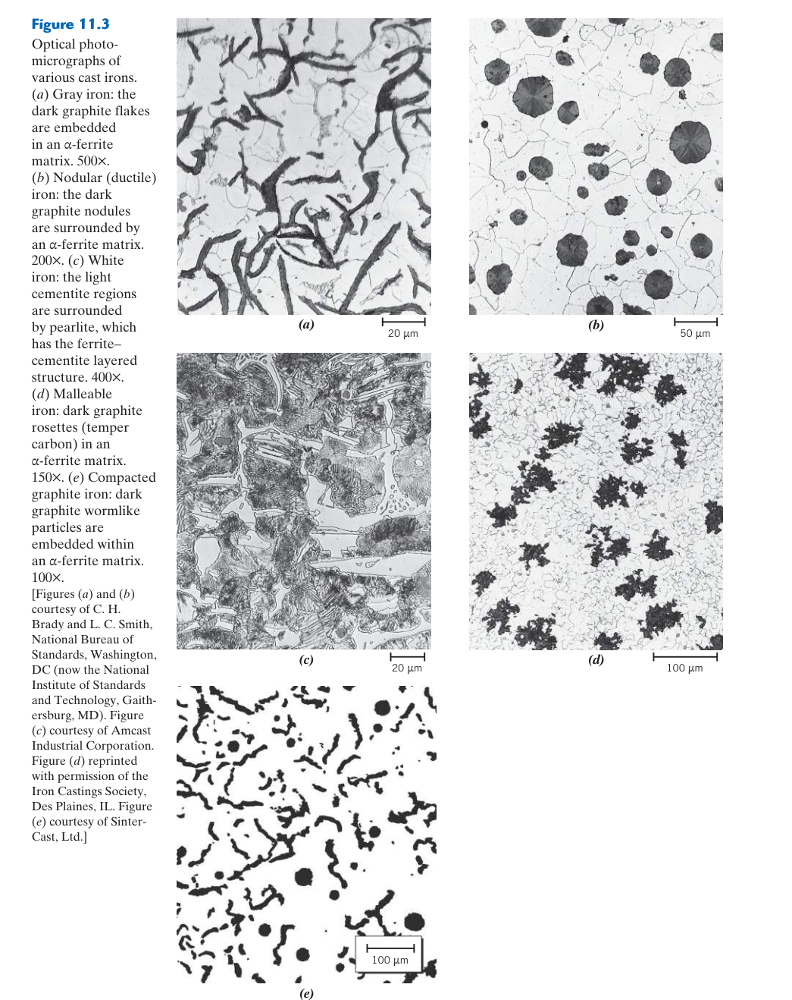
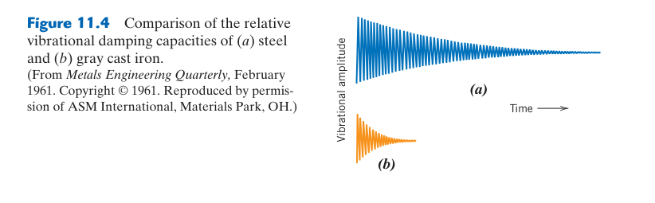
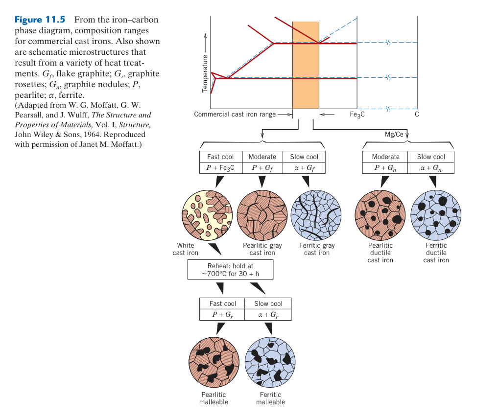

金屬合金的應用與加工
📌 核心問題
為什麼不銹鋼不生鏽？為什麼飛機用鋁合金而不是鋼？為什麼工具鋼能切削其他金屬？本章從前幾章的科學原理轉向工程應用——實際金屬合金的分類、命名系統、加工方法和熱處理製程。
🔑 關鍵概念
- 鋼的分類：低碳（<0.25% C）、中碳（0.25–0.60%）、高碳（>0.60%）、合金鋼、不銹鋼
- AISI/SAE 命名：四位數——前兩碼合金元素、後兩碼碳含量（如 1040 = 0.40% C 碳鋼）
- 不銹鋼三類：肥粒鐵（430, BCC）、沃斯田鐵（304, FCC, Ni 穩定）、麻田散鐵（410, 可淬火硬化）
- 鑄鐵：灰口（片狀石墨）、延性（球狀石墨）、白口（Fe₃C）、展性（退火白口）
- 非鐵合金：鋁（2xxx–8xxx）、銅（黃銅/青銅）、鈦（Ti-6Al-4V）、鎳超合金（渦輪引擎）
- 析出硬化：固溶→淬火→時效。Al-Cu：過飽和 α → GP 區 → θ'' → θ' → θ (CuAl₂)
- 退火：完全退火、正常化、製程退火、應力消除
- 成形：熱作（>再結晶溫度）vs 冷作。鑄造、鍛造、軋延、擠製、3D 列印
🧭 本章推理地圖
- 載荷、溫度、腐蝕、重量與成本（§11.1）→ 轉換成可比較的性能需求（§11.1）。
- 合金元素改變相穩定性、強化與耐蝕能力（§11.2–§11.9）→ 形成鋼、鑄鐵與非鐵合金的不同性質組合（§11.2–§11.9）。
- 鑄造、成形、焊接與熱處理改變晶粒、缺陷與相組成（§11.10及各合金小節）→ 同一牌號可有不同性能。
- 選擇牌號（§11.2–§11.9）→ 指定製程、熱處理狀態與檢驗標準（§11.1、§11.10）→ 得到可重現的零件性能。
- 比較生命週期中的製造性、可靠度與成本（§11.1、§11.10）→ 完成合金與製程的整合選擇。
先備知識橋接
- Ch9：Fe–Fe₃C 相圖——鋼的分類（亞共析/共析/過共析、鋼 vs 鑄鐵）、槓桿定律計算相比例
- Ch10：TTT/CCT 圖、淬透性（Jominy）、回火——本章討論的合金如何透過熱處理獲得特定性質
- Ch7：四大強化機制——本章展示這些機制在真實工業合金中的組合應用
- Ch4：固溶體與 Hume-Rothery 規則——理解合金元素為什麼能溶入鐵中
11.1 導論——金屬合金的工程世界

可追溯性也是材料性能的一部分
材料證明書應連結爐號、成分分析、熱處理批次與機械試驗；關鍵零件還需正材鑑別，避免外觀相似牌號混料。成分落在規格內也不保證性能一致，偏析、夾雜潔淨度、晶粒與製程波動仍會改變疲勞和韌性。
替代材料不能只比較強度
新材料可能具有不同模數、熱膨脹、電偶電位、尺寸變化與焊接程序，進而改變載荷分配和接頭壽命。替代評估應從失效模式出發，以材料試片、接頭與實際零件逐級驗證。若性能只能在極窄製程窗口達成，量產良率與品質成本也必須納入決策。
材料資料還必須標示測試方向與統計基礎。板材縱向的平均拉伸值不能直接代表厚度方向的斷裂或焊接接頭；航太、壓力容器等高後果用途通常採最低保證值、批次放行與無損檢測共同管理。這比追求型錄上的最高典型強度更接近真正的工程可靠度。
材料、製程、檢驗與設計必須形成閉環。
從性能需求回推組織與製程
合金選擇可用「功能—性質—組織—製程」鏈條思考：先定義零件必須承受的載荷、溫度、環境與壽命，再轉成降伏、疲勞、破裂韌性、耐蝕或導電等量化需求；接著選擇能提供這些性質的晶粒、相分率、析出物與缺陷狀態，最後確認鑄造、成形、熱處理與接合能穩定製造。只按材料名稱選擇，常會忽略同一合金不同狀態間數倍的強度差。
材料規格的四個層次
完整規格至少包含化學成分範圍、產品形態與尺寸、熱處理／加工狀態，以及驗收性質與試驗方向。例如「6061 鋁」資訊不足，6061-O、T4、T6 的強度、延性與殘留應力不同；厚板中心的淬火速率也可能低於表面。鋼材同樣需區分鑄件、鍛件、板材與焊管，因缺陷族群、織構和方向性各異。
成本必須看零件生命週期
每公斤價格低不代表零件總成本低。高強材料可減薄但可能增加成形回彈、焊接預熱與防腐成本；耐蝕合金初期昂貴，卻可降低停機、塗裝與更換。選材矩陣可將重量、加工良率、維護、回收與失效後果納入，並以敏感度分析找出最關鍵假設。
資料表數值通常來自標準試片與受控環境。實際零件還有尺寸效應、缺口、表面、焊接熱影響區與多軸載荷；設計容許值應由適用規範、統計下限和安全係數建立，不能直接使用典型平均值。
選材不是追求單一最高數值：合金設計需同時平衡強度、延性、韌性、耐蝕、密度、工作溫度、成形與焊接能力。相同牌號還會因鑄造、鍛造、冷加工或熱處理形成不同組織，因此規格應同時指定成分、產品形態與材料狀態。
前 10 章建立了金屬材料科學的完整基礎——從原子鍵結（Ch2）和晶體結構（Ch3）開始，經過缺陷（Ch4）、擴散（Ch5）、力學性質（Ch6）、差排與強化（Ch7）、斷裂與疲勞（Ch8）、相圖（Ch9）和相變化熱處理（Ch10），一路建立了結構–性質–製程的核心關係。第 11 章是這一切的應用篇——將所有原理匯聚在一起，解釋數千種工業合金的設計邏輯。
金屬合金的種類繁多——但記住一個框架就能理清頭緒：鋼鐵（ferrous）為主 + 非鐵（nonferrous）為輔。鋼鐵（以鐵為主要組元）佔全球金屬使用量的 ~90%（以噸計）——從建築鋼筋、汽車車身、橋樑、管線到機械零件，鋼鐵無所不在。碳鋼（僅含 C + Mn）是最大宗的類別；合金鋼（含 Cr, Ni, Mo, V 等）針對特定性能設計——不銹鋼（Cr ≥ 10.5%）、工具鋼（高速鋼 HSS）、耐熱鋼。非鐵合金（鋁、銅、鎂、鈦、鎳合金等）雖然用量較少，但在高價值應用中不可或缺——航空（鈦、鋁、鎳超合金）、電子（銅）、輕量化（鎂）、生物相容（鈦）。
一個實用的工程法則：只有四個變數決定鋼鐵的性質——(1) 碳含量（決定可達到的硬度上限）；(2) 合金元素（Cr, Ni, Mo 等，決定淬透性和特殊性質）；(3) 熱處理狀態（退火/正火/淬火/回火——微觀結構的「控制桿」）；(4) 晶粒大小（Hall-Petch——細晶 = 強+韌）。理解這個 4 變數框架，你就能看懂任何鋼鐵的規格書。
鋼鐵的優勢不只在於性能，更在於成本：(1) 鐵礦石豐富——地殼中鐵是第四豐富元素（~5%）；(2) 大規模連續生產——高爐+轉爐一條龍，規模經濟極致；(3) 回收性——鋼鐵是全球回收率最高的工程材料（>85%），電弧爐（EAF）以廢鋼為原料；(4) 完整的供應鏈——從礦場到經銷商，全球網絡成熟。鈦合金雖然性能卓越，但 Kroll 製程的海綿鈦成本是鋼的 50–100 倍——這就是為什麼鈦只用於「不惜代價」的航空和醫療應用。
11.2 鋼鐵——碳鋼與合金鋼
鋼種分類與組織控制
碳鋼依碳量增加，珠光體或碳化物比例提高，淬火後麻田散鐵硬度也上升；代價是焊接熱裂、冷裂與低溫韌性風險增加。低合金鋼加入少量 Cr、Mo、Ni、Mn，不只固溶強化，更重要的是推遲波來鐵與變韌鐵形成。熱處理應以截面中心的冷卻曲線設計，表面硬不代表心部也完成淬硬。
微合金鋼以 Nb、V、Ti 的碳氮化物釘扎晶界並析出強化，配合控制軋延取得細晶；它能在較低碳量下維持高強度，因而改善焊接性。比較鋼種時需同時查看碳當量、板厚、衝擊轉變溫度與焊後熱處理要求。
碳量決定潛在硬度，合金元素調整淬透性：低碳鋼易成形焊接，高碳鋼可獲較高硬度但韌性與焊接性下降。Mn、Cr、Mo、Ni 等延遲擴散型轉變，使較厚截面也能形成麻田散鐵；這不代表合金元素必然提高淬後最高硬度。
鋼的分類基於化學成分和應用。AISI/SAE 編號系統：前兩碼 = 主要合金元素，後兩碼 = 碳含量（wt% × 100）。10xx = 碳鋼（無合金元素）；41xx = Cr-Mo 鋼（高溫強度）；43xx = Ni-Cr-Mo 鋼（高淬透性）；86xx = Ni-Cr-Mo 低碳滲碳鋼；52100 = 高碳 Cr 軸承鋼（1.0% C，非 0.00%！——52xxx 系列有特殊編碼規則）。
HSLA 鋼（High-Strength Low-Alloy）是材料設計的典範：僅添加 <0.1 wt% 的 Nb, V, Ti → 控制軋延過程中形成奈米級碳氮化物（~5–20 nm）→ 同時實現晶粒細化（釘紮沃斯田鐵晶界）+ 析出強化 + 低碳保持優異焊接性。降伏強度可達 350–700 MPa（普通碳鋼僅 200–300 MPa），用於管線鋼（X65–X80）、汽車車身、船體結構。
11.3 不銹鋼——五種類型的選擇指南
後處理同樣關鍵：酸洗與鈍化可去除熱色與游離鐵污染；若碳鋼工具或磨料污染表面，即使牌號正確也可能出現銹斑並破壞局部鈍化。
耐蝕取決於局部環境
Cr 含量足以形成鈍化膜只是起點。氯離子可在膜的弱點誘發孔蝕，狹縫內氧耗盡與酸化會造成縫隙腐蝕，拉應力加特定介質則可能發生應力腐蝕開裂。Mo 常提高抗孔蝕能力，Ni 穩定奧氏體並改善韌性；但牌號選擇仍需依溫度、氯濃度、pH、流速與清洗條件判斷。
焊接會改變原本的耐蝕性
焊接熱循環可能在晶界析出 Cr-rich 碳化物，使鄰近區域貧 Cr 而敏化。低碳 L 級或 Ti/Nb 穩定化鋼可降低風險，適當固溶退火則能重新溶解碳化物。雙相鋼還需控制肥粒鐵／奧氏體比例與有害 σ 相；熱輸入太高或太低都可能破壞平衡。
麻田散鐵型可熱處理到高硬度，適合刀具與閥件；肥粒鐵型成本較低、抗氯化物應力腐蝕較佳但低溫韌性有限；析出硬化型兼顧高強和耐蝕。沒有一種「最好」的不銹鋼，只有和失效模式相符的類型。
「不銹」來自鈍化而非永不腐蝕：足量 Cr 形成奈米級 Cr₂O₃ 保護膜，但氯離子、縫隙、缺氧與高溫可破壞鈍化。奧氏體、肥粒鐵、麻田散鐵、雙相與析出硬化型各有不同強化、焊接與應力腐蝕表現，選型必須對應環境與加工。
不銹鋼的關鍵在於 Cr ≥ ~11 wt% → 表面形成 ~1–5 nm 厚的緻密 Cr₂O₃ 鈍化膜（自癒合）。五種類型：(1) 沃斯田鐵（304, 316）——FCC 結構（Ni 穩定 γ 至室溫），佔市場 ~70%。優異成形性和耐蝕性，不可熱處理硬化（只能加工硬化——冷軋可達 ~1000 MPa）。316 含 2–3% Mo → 耐孔蝕性顯著提高（海洋環境）。(2) 肥粒鐵（430）——BCC，有磁性，不含 Ni（較便宜），但韌性和焊接性較差。(3) 麻田散鐵（410, 420）——可淬火形成麻田散鐵硬化，用於刀具和閥門。(4) 雙相（2205）——約 50% α + 50% γ，強度是 304 的兩倍 + 優異抗 SCC。(5) PH（17-4PH）——析出硬化，高強度+良好耐蝕性，用於航太扣件。304L 低碳版（<0.03% C）避免焊接時 Cr₂₃C₆ 晶界析出導致的敏化（sensitization）和晶界腐蝕。
銅合金與鎂合金——被忽視的工程材料
銅合金以導電和導熱為核心應用。(1) 黃銅（brass, Cu-Zn）——Zn 含量 5–40%。單相 α-黃銅（<35% Zn, FCC）：優異冷成形性（彈殼 brass cartridge——深拉成形後退火再深拉，多達 4–5 個道次）。雙相 α+β 黃銅（35–45% Zn）：β 相（BCC）在高溫存在→熱作性佳，用於熱鍛閥體和管件。海軍黃銅（admiralty brass, Cu-28Zn-1Sn）：Sn 提高耐蝕性→冷凝管和熱交換器。黃銅的季節開裂（season cracking）——殘留拉伸應力 + 氨氣環境 → 應力腐蝕開裂。退火消除殘留應力可防止。
(2) 青銅（bronze）——Cu-Sn（~5–12% Sn），歷史最悠久的合金（青銅時代始於 ~3000 BC）。比黃銅更高的強度和耐蝕性，用於船用螺旋槳、軸承、彈簧。磷青銅（phosphor bronze，含 ~0.1% P）有優異的彈性疲勞抗性。鋁青銅（Cu-5–11% Al）的強度和耐蝕性可與中碳鋼競爭。(3) 鈹銅（beryllium copper, Cu-1.8–2% Be）——銅合金中唯一可析出硬化的。固溶處理（800°C）→淬火→時效（300–350°C）→ Be 析出物使強度達 1200–1500 MPa，同時保持導電性。用於航太彈簧、無火花工具（油氣環境）、電子接點。
鎂合金是所有結構金屬中最輕的（密度 ~1.7 g/cm³，比鋁輕 35%）。Mg 的 HCP 結構使室溫成形性差（基底滑移僅 2 個獨立系統），但添加 Al, Zn, Mn 和高溫成形可緩解。主要合金系列：AZ91（Mg-9Al-1Zn，最常用鑄造鎂合金——汽車方向盤骨架、變速箱殼體、筆記型電腦外殼）；WE43（Mg-Y-Nd-Zr，析出硬化，用於航空座椅和直升機變速箱——在 250°C 仍保持優異強度）。鎂合金的最大挑戰：腐蝕（Mg 是結構金屬中最活潑的——電偶序最負）和燃燒風險（鎂粉/薄片可燃燒，熔煉和加工需嚴格防火措施）。
11.4 鋁合金——四大系列與熱處理
疲勞與接頭設計
鋁合金通常沒有明確疲勞限，需指定目標循環數的疲勞強度。孔邊刮痕、腐蝕坑與拉伸殘留應力會顯著縮短壽命；滾壓、噴丸、冷擴孔和良好表面處理可延緩起裂。最高靜態強度狀態未必具有最佳損傷容限。
鋁的熱膨脹約為鋼的兩倍，與陶瓷、複材或鋼嵌件接合時，熱循環會產生界面應力與鬆動。接頭需容許差異膨脹，並以絕緣墊片、密封或塗層避免異種材料電偶腐蝕。
狀態代號背後的組織
O 表示退火軟化，H 系列以加工硬化及部分退火控制，T 系列則描述固溶、淬火、自然或人工時效組合。T4 保留較高成形性並自然時效，T6 常取得較高強度，T7 過時效可犧牲部分強度換取尺寸、耐蝕或抗應力腐蝕穩定。設計圖若只寫合金系列而漏掉 temper，幾乎無法確定力學性質。
淬火敏感性與焊接軟化
厚件中心冷卻慢，粗大晶界析出會消耗溶質並形成無析出帶，使強度和耐蝕性與薄試片不同。熔焊也會使熱影響區的析出物溶解或過時效，最弱位置常不在焊金屬本身。可藉焊後熱處理、摩擦攪拌焊或結構補強改善，但大型件未必能重新完整固溶淬火。
鋁表面氧化膜耐一般大氣，卻會干擾熔焊與釬焊潤濕；與碳纖維、銅或鋼接觸時也需防電偶腐蝕。高強 2xxx、7xxx 的耐蝕和焊接性通常不如 5xxx、6xxx，選材必須平衡。
先分可熱處理與不可熱處理系列：2xxx、6xxx、7xxx 主要靠固溶處理、淬火與時效析出強化；1xxx、3xxx、5xxx 多靠固溶與加工硬化。鋁的彈性模數不會因高強化而大幅提高，故薄壁構件仍可能由剛度、屈曲或疲勞控制。
鋁合金依主要合金元素分為四大系列：(1) 2xxx（Al-Cu-Mg）——2024（Al-4.5Cu-1.5Mg-0.6Mn，T3 態 $\sigma_y \approx 345$ MPa）。飛機機身蒙皮的經典材料。析出序列：過飽和 α → GP 區（Cu 原子單層聚集盤，室溫自然時效）→ $\theta''$（峰值強度，~150–190°C 人工時效）→ $\theta'$ → $\theta$（CuAl₂ 平衡相，過時效）。缺點：不可焊接。(2) 6xxx（Al-Mg-Si）——6061-T6 是最通用的鋁合金（$\sigma_y \approx 275$ MPa），良好耐蝕性和焊接性，擠製型材首選。(3) 7xxx（Al-Zn-Mg-Cu）——7075-T6（$\sigma_y \approx 500$ MPa）是強度最高的鋁合金。7075-T73 是過時效態——犧牲 10–15% 強度換取優異抗 SCC。鋁合金的熱處理標記（temper）至關重要——T3/T4/T6/T7 的強度可相差 2–3 倍。(4) Al-Li 合金——每 1% Li 降低密度 ~3% 提高剛性 ~6%，用於最新航空器。
11.5 鎂合金——最輕的結構金屬
加工安全：鎂屑與細粉可燃，機加工需控制切屑堆積、火源與粉塵，並準備適用的 D 類滅火介質；金屬火災不能以水直接處理。
成形與織構
室溫軋延鎂板常形成強基底織構，使厚度方向變形困難、拉壓降伏不對稱並易產生耳高。升溫可啟動非基底滑移並促進動態再結晶，改善成形；稀土合金化也能弱化織構。壓鑄鎂適合薄壁複雜件，但孔隙會限制焊接、熱處理與高疲勞應用。
腐蝕與接觸設計
鎂電位活潑，與鋼、銅或碳纖維接觸且有電解液時易成為陽極快速溶解。塗層若局部破損，面積比還可能放大腐蝕。設計需隔離異種材料、避免積水縫隙並控制 Fe、Ni、Cu 等微量雜質，因它們會形成高效陰極點。
低密度伴隨製程限制：HCP 結構使室溫滑移系統不足，板材成形常需升溫；熔融鎂活性高，鑄造需防氧化與燃燒。其比強度優良，但彈性模數低、耐蝕與高溫潛變能力需藉合金化、塗層和結構設計補足。
鎂合金是所有結構金屬中最輕的。Mg 的 HCP 結構使室溫成形性差（基底滑移僅 2 個獨立系統），但添加 Al, Zn, Mn 和高溫成形可緩解。主要合金：AZ91（Mg-9Al-1Zn）——最常用鑄造鎂合金（汽車方向盤骨架、筆電外殼）；WE43（Mg-Y-Nd-Zr）——析出硬化，在 250°C 仍保持優異強度（直升機變速箱）。最大挑戰：(1) 腐蝕——Mg 是結構金屬中最活潑的（電偶序最負），與其他金屬接觸時作為陽極被加速腐蝕；(2) 燃燒風險——鎂粉/薄片可燃燒（熔煉和加工需嚴格防火措施）。
11.6 鈦合金——最高的比強度


相變與熱處理窗口
跨越 $\beta$ 轉變溫度加熱再冷卻，可得到粗大 prior-$\beta$ 晶粒內的板條組織，適合破裂與潛變需求；在兩相區加工與退火則可形成等軸或雙峰組織，兼顧疲勞與延性。冷卻極快時可能形成 $\alpha'$ 麻田散鐵，後續時效再分解。熱歷史不同，即使都是 Ti–6Al–4V 也不能視為同一材料。
表面與氫氧污染
高溫鈦會強烈吸收 O、N、H，形成硬脆 alpha case 或氫化物；鍛造、熱處理和焊接需真空或惰性保護，污染層常要機加工去除。鈦的耐蝕膜雖穩定，摩擦磨耗卻可能反覆破膜並造成咬合，因此滑動接觸常需塗層或異材配對。
$\alpha/\beta$ 相比例控制性能：Al 等穩定 $\alpha$ 相，V、Mo 等穩定 $\beta$ 相；熱處理可調整板條、等軸或雙峰組織。鈦耐蝕來自緻密氧化膜，但加工時導熱差、化學活性高且易咬刀，成本不能只看原料金屬價格。
Ti-6Al-4V（Grade 5，α+β 雙相）是鈦合金的主力。Al 穩定 α（HCP）、V 穩定 β（BCC）——雙相微觀結構可透過熱處理調控 α/β 比例和形貌（等軸 vs 層狀）。比強度是所有金屬中最高的，在 −250°C 到 400°C 保持優異性能。應用：航空引擎前半段（壓縮機葉片，~500°C）、人工髖關節和牙科植入物（骨整合性優異）、高爾夫球桿頭（低彈性模數 → 擊球感佳）。缺點：海綿鈦的 Kroll 製程能耗極高 → 價格昂貴；低導熱率 → 切削升溫 → 刀具磨損快；高溫下與 O₂/N₂ 反應 → 表面硬化層。
11.7 鎳超合金——高溫極限的守門人

$\gamma/\gamma'$ 微結構如何承載
FCC $\gamma$ 基體提供韌性，有序 L1₂ $\gamma'$ 顆粒與基體近共格，迫使差排成對切過以維持有序，或在較大顆粒間繞過。高溫長時下 $\gamma'$ 可能沿應力方向筏化；這不一定立即失效，其影響取決於載荷方向、通道寬度與差排機制。單晶葉片還以晶向控制降低彈性與潛變不利。
塗層與冷卻是材料系統的一部分
葉片表面常用 MCrAlY 或擴散鋁化物形成保護 Al₂O₃，再覆低導熱陶瓷隔熱層；內部通道與氣膜冷卻降低金屬溫度。塗層氧化成長、熱膨脹不匹配與熱循環會引起剝落，所以壽命不能只由基材拉伸強度預測。
高溫強度依賴穩定障礙：有序共格 $\gamma'$ 析出物在高溫仍能阻擋差排，固溶難熔元素減慢擴散，Cr/Al 則形成保護氧化膜。過度添加可能形成 TCP 脆性相並耗盡強化元素，因此長期相穩定性和抗氧化與室溫強度同等重要。
鎳超合金的三重防禦：(1) $\gamma'$（Ni₃Al, L1₂ 有序結構）——佔體積 50–70%，與 FCC 基材完全共格（晶格失配 <0.5%），高溫下極穩定。差排必須成對切穿 $\gamma'$（形成超晶格部分差排對）——需要極高應力。(2) 固溶強化——W, Mo, Re 溶入基材。Re 是關鍵元素：原子半徑大 → 晶格膨脹 → 阻礙差排攀移。但全球年產量僅 ~50 噸（比黃金稀有 50 倍！），單晶葉片含 ~6% Re。(3) 單晶鑄造——定向凝固製程：底部水冷+線圈加熱 → 晶體沿 [001] 方向垂直生長 → 完全消除晶界。高溫下晶界是弱點——晶界滑動和空洞成核的優先位置。
11.8 銅合金——從導電到耐蝕的多元應用

析出型銅合金的平衡：Cu–Cr–Zr、Cu–Be 等先固溶再時效，可用細小析出物提高強度，同時讓基體中的溶質濃度下降而恢復部分導電率。若過時效，強度下降但導電可能繼續改善，因此電極、彈片與散熱構件需按主要功能選擇狀態。
導電率與強度通常互相競爭：溶質與缺陷會散射電子，因此純銅導電最好卻較軟；黃銅、青銅與 Cu–Be 可藉固溶、加工或析出提高強度，但導電率下降。接點材料還需考慮應力鬆弛、電弧侵蝕與電偶腐蝕。
銅合金以導電和導熱為核心應用。黃銅（brass, Cu-Zn）——單相 α-黃銅（<35% Zn, FCC）有優異冷成形性（彈殼經 4–5 道次深拉+工序間退火）。海軍黃銅（Cu-28Zn-1Sn）——Sn 提高耐蝕性，用於冷凝管。青銅（bronze, Cu-Sn）——歷史最悠久（青銅時代 ~3000 BC），用於船用螺旋槳和軸承。鈹銅（Cu-1.8–2% Be）——固溶處理+時效 → Be 析出物使強度達 1200–1500 MPa，同時保持優異導電性，用於航太彈簧和無火花工具。
11.9 鑄鐵——石墨形態決定性質



截面敏感性：厚薄位置冷卻速率不同，同一鑄件可能形成不同石墨數量、基體與硬度。品質控制應在代表位置檢查球化率、節瘤數、碳化物與縮鬆；只量一個表面硬度不足以代表整件。
加工餘量也應避開表面冷硬層與縮鬆集中區。
凝固路徑與孕育處理
碳可依穩定 Fe–C 系統析出石墨，也可依亞穩 Fe–Fe₃C 系統形成滲碳體。Si、慢冷與有效石墨核促進石墨化；快速冷卻、薄壁或孕育不足則容易白口。澆注前加入孕育劑增加成核位置，可減少過冷、細化共晶團並改善截面均勻性。
不同石墨形態的破壞含義
片狀石墨提供內部缺口，故灰鑄鐵抗拉弱但壓縮、阻尼與導熱佳；球狀石墨降低尖端集中，使球墨鑄鐵可有明顯延性。蠕墨鑄鐵介於兩者，兼具較佳導熱與強度，常用於柴油引擎缸體。最終性質還取決於基體是肥粒鐵、波來鐵、變韌鐵或麻田散鐵。
石墨形狀改變缺口效應：灰鑄鐵片狀石墨尖端應力集中高，抗拉與延性低但阻尼、導熱與切削性佳；球墨鑄鐵以 Mg 處理使石墨球化，大幅改善韌性。冷卻速率與 Si 含量還會決定基體為肥粒鐵、波來鐵或形成白口滲碳體。
鑄鐵的分類以石墨形態區分：(1) 灰口鑄鐵（gray iron）——Si >2%+緩冷 → 片狀石墨。石墨片的內缺口效應 → 拉伸強度低（150–400 MPa）但壓縮強度高（600–1000 MPa），振動阻尼極佳（機床底座）。(2) 延性鑄鐵（ductile iron, SG iron）——添加少量 Mg/Ce → 石墨以球狀析出。球狀的應力集中遠小於片狀 → 拉伸強度 400–800 MPa + %EL 2–18%（曲軸、轉向節）。(3) 白口鑄鐵（white iron）——快冷+低 Si → 碳以 Fe₃C 存在（無石墨）。HRC 50–60，極硬極脆，用於礦石粉碎機襯板。(4) 展性鑄鐵（malleable iron）——白口鑄鐵經 ~900°C 數十小時退火 → Fe₃C 分解為團絮狀石墨。歷史悠久但現代已大量被 延性鑄鐵取代。
11.10 金屬成形與加工——熱作、冷作與鑄造
製程缺陷與檢驗
熱作可能產生氧化皮、折疊與中心疏鬆未焊合；冷作會引入回彈、橘皮、殘留應力與方向性；鑄造則需防縮孔、氣孔、夾雜、冷隔和熱裂。每種缺陷需要不同檢測：表面裂紋可用滲透或磁粉，內部體積缺陷用超音波或射線，尺寸與殘留應力則另行量測。
近淨成形與後續加工
鍛造纖維流線可提高疲勞與衝擊可靠度，但模具昂貴；精密鑄造能製造複雜高熔點零件，卻需控制陶殼反應和凝固方向；積層製造提供內部通道與客製幾何，但快速熱循環形成柱狀晶、孔隙和高殘留應力，常需熱等靜壓與熱處理。最佳路線由產量、尺寸、容許缺陷及後加工共同決定。
熱作與冷作以再結晶溫度區分：熱作可持續消除加工硬化、允許大變形，但氧化、尺寸精度與表面品質較差；冷作精度高且可強化，卻需要更大載荷並累積殘留應力。鑄造能製造複雜形狀，但凝固收縮、氣孔、偏析與熱裂需靠模流和補縮設計控制。
熱作（hot working, $T > 0.6T_m$）：金屬在加工同時動態再結晶，差排持續被消除 → 可在較低力量下完成大變形量（鍛造鋼錠從數噸加工到數百公斤）。終止溫度需控制——過高 → 晶粒粗化，過低 → 殘留加工硬化。冷作（cold working, $T < 0.3T_m$）：差排累積 → 加工硬化 → 強度上升+精確尺寸+良好表面。用於最終精加工（冷軋板材、冷鍛螺栓）。
鑄造的關鍵：澆鑄性取決於流動性和凝固範圍。純金屬和共晶合金（固定熔點）流動性最佳；糊狀凝固的合金流動性差。補充澆口（riser）必須最後凝固以補償收縮。金屬 3D 列印（PBF 粉末床熔融）可製造內部共形冷卻通道和拓撲優化輕量化結構，但成本仍遠高於傳統鑄造，目前主要用於航太和醫療。
金屬的回收與永續性——材料選擇的宏觀視角
金屬在永續性方面具有獨特優勢：它們可以無限次回收而不損失本質性質（與塑膠的降級回收不同）。鋼是全球回收率最高的材料——新製造的鋼中 ~60% 來自廢鋼（EAF 電弧爐路線），回收煉鋼比從鐵礦石煉鋼（BF-BOF 路線）節能 ~60–74% 並減少碳排放 ~58%。電弧爐的原料幾乎 100% 是廢鋼。磁選分離使鋼的回收極其高效——廢車體和家電在粉碎機中粉碎後，磁鐵自動分離鐵金屬。
鋁的回收節能更驚人——從鋁廢料重熔僅需從鋁礬土（Bauxite）電解煉鋁（Hall-Héroult 製程）能源的5%！這是因為鋁的化學活性極高，從氧化物還原需要巨大的電能（~15 kWh/kg Al），而重熔僅需熱能（~0.7 kWh/kg Al）。飲料罐的閉環回收（can-to-can）僅需 60 天從廢罐回到貨架。但鋁合金回收的最大挑戰是合金元素的累積——不同系列的鋁合金（鑄造 Al-Si vs 鍛造 Al-Cu vs Al-Mg）混合後，雜質元素（Fe, Si, Cu）超標→降級為鑄造合金（不能再做鍛造產品）。因此高價值鋁廢料（如 7075 機翼結構）需要嚴格的分類回收。
有些合金元素正面臨供應鏈風險：Re（錸）——單晶鎳超合金的關鍵元素，全球年產量 ~50 噸，主要來自智利的銅鉬礦副產物。若供應中斷，現代航空引擎的生產將停滯。Co（鈷）——硬質合金（WC-Co）和電池的關鍵元素，~60% 來自剛果民主共和國（政治不穩定和童工問題）。稀土（REE）——Nd, Dy 用於永久磁鐵（電動車馬達和風力發電機），~60% 產自中國。這些供應鏈風險推動了都市採礦（urban mining——從廢棄電子產品回收貴重金屬）和替代元素開發（如無稀土磁鐵的研究）。材料選擇不僅是技術問題，也是地緣政治和倫理問題。
鋼鐵選材速查——從 AISI 號碼到應用
| AISI | 類型 | 標誌性應用 | 熱處理 |
|---|---|---|---|
| 1020 | 低碳鋼 | 管線、結構型鋼 | 熱軋態直接使用 |
| 1045 | 中碳鋼 | 曲軸、齒輪、螺栓 | 淬火+回火（調質） |
| 1095 | 高碳鋼 | 彈簧、刀具、鋼琴線 | 淬火+低溫回火 |
| 4140 | Cr-Mo 鋼 | 重型軸、齒輪 | 油淬+回火（優異淬透性） |
| 4340 | Ni-Cr-Mo 鋼 | 飛機起落架、重型曲軸 | 油淬+回火（極深硬化） |
| 52100 | 高碳 Cr 鋼 | 滾珠軸承、滾柱 | 淬火+低溫回火（HRC 60–64） |
| 8620 | Ni-Cr-Mo 低碳鋼 | 滲碳齒輪、差速器齒輪 | 滲碳→淬火→低溫回火 |
| 304 | 沃斯田鐵不銹鋼 | 食品設備、建築 | 固溶退火（不可淬火硬化） |
| 440C | 麻田散鐵不銹鋼 | 高級刀具、軸承 | 淬火+深冷處理+低溫回火 |
歐元硬幣的八種面額使用四種不同合金——每種的選擇反映功能需求、成本和偽造防範的平衡：
| 面額 | 顏色 | 合金 | 選擇原因 |
|---|---|---|---|
| 1, 2, 5 分 | 紅銅色 | 銅包鋼 | 低成本、傳統貨幣外觀 |
| 10, 20, 50 分 | 金色 | 北歐金（89Cu-5Al-5Zn-1Sn） | 無鎳（抗過敏）、優良鑄造性 |
| €1/€2 外環 | 金色 | 鎳黃銅（75Cu-20Zn-5Ni） | 耐磨、與內芯對比鮮明 |
| €1/€2 內芯 | 銀色 | 銅鎳合金三層 | 獨特電磁簽名——自動販賣機防偽 |
€1 和 €2 的雙金屬設計具有特定電導率和磁導率簽名——自動販賣機透過感應線圈測量這些性質區分真偽。這是功能性質被刻意思考進產品設計的實例。
本章摘要
主要合金系統對照表
| 合金類別 | 代表性材料 | 主要強化機制 | 典型應用 |
|---|---|---|---|
| 低碳鋼 | AISI 1020 (0.20% C) | 肥粒鐵+波來鐵比例 | 結構型鋼、管線 |
| 中碳鋼 | AISI 1045 (0.45% C) | 淬火+回火（麻田散鐵→回火麻田散鐵） | 曲軸、齒輪、連桿 |
| 合金鋼 | AISI 4340 (Ni-Cr-Mo) | 高淬透性→深層麻田散鐵+回火 | 飛機起落架、重型軸 |
| 沃斯田鐵不銹鋼 | 304 (18Cr-8Ni) | 固溶強化+加工硬化（不可熱處理） | 食品設備、建築裝飾 |
| 肥粒鐵不銹鋼 | 430 (17Cr) | 固溶強化 | 汽車排氣系統 |
| 麻田散鐵不銹鋼 | 410 (12Cr) | 淬火硬化 | 刀具、閥門 |
| Al-Cu (2xxx) | 2024 (Al-4.5Cu) | 析出硬化（GP區→θ''→θ'→θ） | 飛機機身蒙皮 |
| Al-Zn (7xxx) | 7075 (Al-Zn-Mg-Cu) | 析出硬化（η' 析出物） | 飛機機翼結構 |
| Ti-6Al-4V | Grade 5 | α+β 雙相；固溶+時效 | 渦輪葉片、人工關節 |
| 鎳超合金 | Inconel 718 | γ' (Ni₃Al) 析出+固溶強化 | 燃氣渦輪熱區 |
- 鋼的世界：碳含量 + 合金元素 + 熱處理 = 幾乎無限的性質組合。AISI 四位數系統編碼了成分和特性。
- 不銹鋼 = Cr ≥ 11%：鈍化膜是耐蝕關鍵。三類不銹鋼對應不同的晶體結構和強化方式。
- 鋁合金靠析出硬化：過飽和→GP 區→過渡相（峰值強度）→平衡相（過時效軟化）。控制析出序列是鋁合金熱處理的核心。
- 鎳超合金 + 單晶 = 極限高溫性能：γ' 析出物 + 固溶元素 + 消除晶界 = 1000°C 下數萬小時服役。
📝 概念診斷題
- AISI 1040 鋼的碳含量是多少？與 AISI 1080 相比，哪個更適合用於需要高硬度的切削工具？哪個更適合用於需要良好焊接性的結構件？
- 304 和 304L 不銹鋼的化學成分幾乎相同，唯一的差別是 304L 的碳含量 <0.03%。這個微小的差異為什麼對焊接至關重要？
- 7075 鋁合金（Al-Zn-Mg-Cu）在峰值時效（T6）狀態的強度高達 ~570 MPa，但不可焊接。2024（Al-Cu）也難以焊接。為什麼高強度鋁合金普遍焊接性差？
- 為什麼單晶渦輪葉片的成本是多晶的 5–10 倍，但現代航空引擎的高壓渦輪仍然使用單晶？
- 灰口鑄鐵中的石墨是片狀的， 延性鑄鐵中的石墨是球狀的。這個形狀差異如何影響力學性質？
🧪 診斷
方程式使用契約
- 不銹鋼的「耐蝕性」不是二元的（「生鏽」vs「不生鏽」）——是腐蝕速率的數量級差異。304 在沿海環境中仍可能發生孔蝕，316 更耐孔蝕，雙相不銹鋼幾乎免疫
- 鋁合金的熱處理標記（T3, T4, T6, T7）有精確定義——不可混淆：T3=固溶+冷加工+自然時效；T4=固溶+自然時效；T6=固溶+人工時效（峰值）；T7=固溶+過時效（犧牲強度換抗 SCC）
- AISI/SAE 鋼號系統：四位數的前兩碼=主要合金元素，後兩碼=碳含量（wt% × 100）。1040=碳鋼（10xx）含 0.40% C；4340=Ni-Cr-Mo 鋼（43xx）含 0.40% C
⚠️ 常見錯誤
錯。不銹鋼在缺氧環境（如縫隙、螺栓接頭）或氯離子環境（海水）中仍可能發生孔蝕和縫隙腐蝕。304 在沿海環境中可能生鏽；316（含 Mo）的耐孔蝕性更佳。
錯。只有可析出硬化的合金（2xxx, 6xxx, 7xxx）可以熱處理。1xxx（純鋁）、3xxx（Al-Mn）、5xxx（Al-Mg）只能加工硬化——加熱只會退火軟化，不會強化。選擇焊接填充金屬時必須考慮這個差異。
對大部分鋼是對的（1040 = 0.40% C），但有例外：52100 的碳含量是 ~1.0%（不是 0.00%！），因為 52xxx 系列用不同的編碼規則。工具鋼（A, D, H, M, T, W 系列）、不銹鋼（3xx, 4xx）都不遵循 AISI 四位數規則。永遠查閱規格表而非盲目解讀編號。
📚 延伸資源
- ASM Handbook Vol. 1: Properties and Selection: Irons, Steels, and High-Performance Alloys — 各類鋼鐵和合金的性質數據與選材指南
- Davis, J.R. (ed.), Aluminum and Aluminum Alloys — 鋁合金冶金學與應用的綜合參考
- Donachie, M.J. & Donachie, S.J., Superalloys: A Technical Guide — 鎳超合金的完整指南，從冶煉到單晶鑄造
- 下一章：第 12 章：陶瓷的結構與性質——從金屬的延性世界轉向陶瓷的離子/共價鍵結和高溫脆性